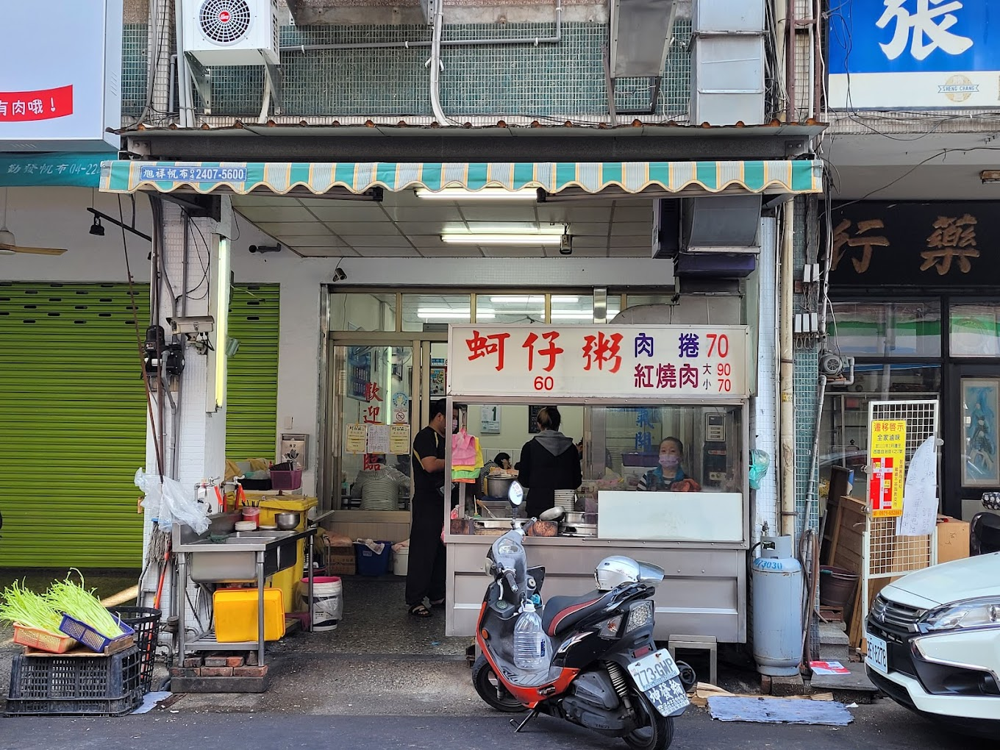
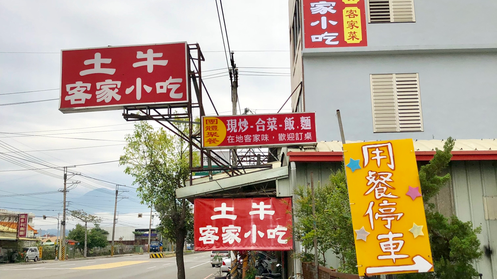

阿伯蛋包麵
阿伯蛋包麵
地址：台北市萬華區雙園街88號
時間：週一～週日03:30–14:00
電話：02-23381439
|
元味古早小吃
元味古早小吃
地址：台北市中正區延平南路179巷1弄1號
時間：週日～週五11:00–20:00，週六休息
電話：02-23718611
|
以馬內利鮮魚湯
以馬內利鮮魚湯
地址：台北市中正區杭州南路一段3號
時間：週一～週六07:00–14:00，週日休息
電話：02-23515378
|
阜杭豆漿
阜杭豆漿
地址：台北市中正區忠孝東路一段108號2樓
時間：週二～週日05:30–12:30，週一休息
電話：02-23922175
|
台開早餐店
台開早餐店
地址：台北市大同區承德路三段256號
時間：週一～週五06:30–13:00，週末休息
電話：02-25859302
|
紅茶屋
紅茶屋
地址：台北市大同區重慶北路三段335巷56之1號
時間：週二～週日06:30–20:30，週一休息
電話：02-25941932
|
冰山五角
冰山五角
地址：台北市大同區酒泉街10巷5號
時間：週一～週日10:30–21:00
電話：0913011782
|
高記生炒魷魚
高記生炒魷魚
地址：新北市板橋區宮口街28號
時間：週二～週日08:00–17:00，週一休息
電話：02-29603503
|
板橋小籠包
板橋小籠包
地址：新北市板橋區南雅南路一段79號
時間：週一～週日16:00–00:30
電話：02-29677818
|
御品─炸雞、粉圓專賣店
御品─炸雞、粉圓專賣店
地址：新北市板橋區南雅南路一段108號
時間：週一～週四15:00–01:00，週五15:00–02:00，週六12:00–02:00，週日12:00–01:00
電話：0912073509
|
邱家肉羹

邱家肉羹
地址：新北市板橋區北門街42號
時間：週一00:00–20:00，週二～週日08:00–20:00
電話：02-29605635
|
巷口麵店
巷口麵店
地址：新北市中和區保健路19巷2弄
時間：週一～週五11:00–21:00，週末休息
電話：0975087208
|
金枝紅糟肉
金枝紅糟肉
地址：新北市瑞芳區基山街112號
時間：週一～週五11:00–19:00，週六10:00–20:00，週日10:00–19:30
電話：02-24960240
|
石碇老街阿嬤麻糬
石碇老街阿嬤麻糬
地址：新北市石碇區石碇東街59號
時間：週二～週日11:00–17:00，週一休息
電話：02-26631257
|
崁仔頂碳烤三明治
崁仔頂碳烤三明治
地址：基隆市仁愛區忠四路1號
時間：週一～週六18:00–03:00，週日休息
電話：02-24288550
|
三沙灣麵線羹
三沙灣麵線羹
地址：基隆市中正區中船路104號
時間：週一～週日07:00–18:00
電話：02-24240588
|
魚丸伯仔
魚丸伯仔
地址：基隆市仁愛區愛二路56號
時間：週一～週日10:30–18:00
電話：02-24248831
|
麗香的店阿本伯燒賣
麗香的店阿本伯燒賣
地址：基隆市仁愛區忠二路63號
時間：週一00:00–20:00，週二～週日07:00–18:00
電話：02-24232861
|
阿國碳烤燒餅
阿國碳烤燒餅
地址：基隆市仁愛區孝四路21號
時間：週一～週六06:30–18:00，週日休息
電話：02-24212009
|
洪佳豆花
洪佳豆花
地址：基隆市中山區復興路37號
時間：週二～週六12:00–20:30，週日、一休息
電話：02-24373511
|
手工碳烤吉古拉
手工碳烤吉古拉
地址：基隆市中正區正濱路27號
時間：週三～週日07:00–11:00，週一、二休息
電話：0910251920
|
唐記雲南米干總店
唐記雲南米干總店
地址：桃園市中壢區龍東路214號
時間：週一～週日07:00–21:30
電話：03-4162203
|
好滋味麵館
好滋味麵館
地址：桃園市中壢區福德路90-1號
時間：週二～週日11:00–14:00, 17:00–20:00，週一休息
電話：03-4555622
|
賴媽媽傳統豆花
賴媽媽傳統豆花
地址：桃園市大溪區登龍路22號多目標體育館1樓
時間：週一～週日09:00–18:00
電話：03-3889646
|
老賊壽司
老賊壽司
地址：桃園市桃園區中正路328號
時間：週一、週二休息，週三～週日06:00–20:00
電話：03-3360935
|
鵝有雞燴
鵝有雞燴
地址：桃園市龍潭區龍元路23號
時間：週一～週五、周日11:00–14:00, 17:00–21:30，週六休息
電話：0930631657
|
老阿伯現滷豆干
老阿伯現滷豆干
地址：桃園市大溪區中正路37號
時間：週一～週五09:00–18:00，週六08:30–19:00，週日08:00–19:00
電話：03-3883422
|
驚嘆號臭豆腐
驚嘆號臭豆腐
地址：桃園市桃園區中正路495號
時間：週一～週五15:30–00:00，週末11:30–00:00
電話：0968686359
|
黃媽媽豆瓣麵
黃媽媽豆瓣麵
地址：新竹市東區學府路441巷11號
時間：週一～週六06:00–13:30，週日休息
電話：03-5750128
|
東門文昌雞飯
東門文昌雞飯
地址：新竹市東區東門街114號
時間：週二～週日11:00–14:00, 16:30–21:00，週一休息
電話：03-5225082
|
源味燉品屋
源味燉品屋
地址：新竹市北區中正路217號
時間：週一～週日24小時營業
電話：03-5251361
|
三廠炸醬麵店
三廠炸醬麵店
地址：新竹市北區延平路一段178號
時間：週一休息，週二～週日05:30–14:00
電話：03-5267349
|
阿婆早餐麵店
阿婆早餐麵店
地址：新竹市東區東山街6號
時間：週二～週六06:00–14:00，週日、一休息
電話：03-5730765
|
廟口鴨香飯
廟口鴨香飯
地址：新竹市北區中山路142號
時間：週一、週四～週日11:00–15:00, 15:30–21:00，週二、週三休息
電話：03-5231190
|
周家燒麻糬
周家燒麻糬
地址：新竹市北區中山路75號
時間：周一、周二、週四～週日13:00–20:00，週三休息
電話：0955346226
|
祥賀芒果冰
祥賀芒果冰
地址：苗栗縣竹南鎮公義路2452號
時間：週二～週日11:00–19:00，週一休息
電話：03-7583783
|
偷吃豆花
偷吃豆花
地址：苗栗縣頭份市義民街8號
時間：週三～週日12:30–19:00，週一、二休息
|
金榜麵館
金榜麵館
地址：苗栗縣三義鄉中正路170-7號
時間：週一～週日07:00–20:00
電話：03-7873567
|
銅鑼蛋餅

銅鑼蛋餅
地址：苗栗縣銅鑼鄉銅鑼街30號
時間：週一休息，週二06:30–12:00，週三～週日06:00–12:00
|
福樂麵店

福樂麵店
地址：苗栗縣公館鄉福基村121號
時間：週一休息，週二～週五10:00–14:00, 17:00–20:00，週末10:00–20:00
電話：03-7224455
|
一口香餡餅
一口香餡餅
地址：苗栗縣苗栗市中山路49之4號
時間：週一～週日14:00–18:30
電話：03-7273366
|
老余牛家莊
老余牛家莊
地址：苗栗縣後龍鎮中華路1021號
時間：週一～週日10:00–20:00
電話：03-7726304
|
屋馬燒肉
屋馬燒肉
地址：台中市西屯區臺灣大道三段300號1樓
時間：週一～週日11:00–01:00
電話：04-23121000
|
第五市場蚵仔粥

第五市場蚵仔粥
地址：台中市西區樂群街80號
時間：週二～週日09:00–20:00，週一休息
電話：04-23727798
|
春水堂
春水堂
地址：台中市西區四維街30號
時間：週一～週日08:00–22:00
電話：04-22297991
|
東勢牛稼莊
東勢牛稼莊
地址：台中市東勢區新豐街19號
時間：週一～週日11:00–15:00, 17:00–20:00
電話：04-25873488
|
土牛客家小吃

土牛客家小吃
地址：台中市石岡區豐勢路399號
時間：週一、週二、週四～週日11:00–14:00, 17:00–20:00，週三休息
電話：04-25813498
|
來來牛排
來來牛排
地址：台中市沙鹿區興安路19號
時間：週一、週二、週五～週日11:00–13:30, 16:30–19:30，週三、週四休息
電話：04-26358751
|
龍哥雞排
龍哥雞排
地址：台中市南屯區向心南路969-1號
時間：週二～週六16:00–23:55，週日16:00–23:00，週一休息
電話：0983738745
|
正宗員林肉圓
正宗員林肉圓
地址：彰化縣員林市民族街22-4號
時間：週一、週二、週四、週五10:30–18:00，週末10:00–17:00，週三休息
電話：04-8351600
|
田中央豚將拉麵
田中央豚將拉麵
地址：彰化縣田中鎮斗中路二段351號
時間：週一～週五11:00–13:00, 17:00–19:30，週末11:00–13:30, 17:00–20:00
電話：04-8745370
|
日日家緣豆沙牛奶
日日家緣豆沙牛奶
地址：彰化縣彰化市南郭路一段111號
時間：週一～週日10:00–21:00
電話：0988403650
|
王罔麵線糊
王罔麵線糊
地址：彰化縣鹿港鎮民族路268號
時間：週一～週日06:00–18:30
電話：0958629960
|
阿三肉圓
阿三肉圓
地址：彰化縣彰化市三民路242號
時間：週二～週日10:30–19:00，週一休息
電話：04-7240095
|
阿振肉包
阿振肉包
地址：彰化縣鹿港鎮中山路71號
時間：週一～週日09:00–19:00
電話：04-7772754
|
阿璋肉圓
阿璋肉圓
地址：彰化縣彰化市長安街144號
時間：週一～週五09:30–22:30，週末09:00–22:30
電話：04-7229517
|
老胡麵館
老胡麵館
地址：南投縣南投市光華路98號
時間：週一休息，週二、週三11:00–14:00，週四～週日11:00–14:00, 17:00–19:00
電話：04-92312845
|
黃媽媽小籠包
黃媽媽小籠包
地址：南投縣南投市光榮西路一街13號
時間：週一、週四休息, 週二、週三、週五、週六06:30–18:30，週日06:30–14:30
電話：04-92312333
|
高家麵館
高家麵館
地址：南投縣南投市光榮西路一街13號
時間：週一、週三～週五10:30–19:30，週末07:00–15:00，週二休息
|
東東刈包
東東刈包
地址：南投縣魚池鄉義勇街111號
時間：週一、週五10:30–17:00，週六、週日10:30–18:00
|
碼啡館
碼啡館
地址：南投縣魚池鄉名勝街11號B1樓
時間：週一～週日11:00–20:00
電話：04-92856553
|
翻茶手調飲料
翻茶手調飲料
地址：南投縣魚池鄉義勇街122號
時間：週一～週五09:30–19:00，週末09:30–20:00
電話：04-92850312
|
李蘇古早味紅薯餅
李蘇古早味紅薯餅
地址：南投縣草屯鎮碧山路190號
時間：週一、週二、週六14:00–18:00，週三～週五14:00–16:00，週日14:00–17:00
|
臻狀元囍餅
臻狀元囍餅
地址：雲林縣北港鎮中山路165號
時間：週一～週五08:00–21:00，週六08:00–22:00，週日07:00–22:00
電話：05-7833678
|
溝垻清涼冰店
溝垻清涼冰店
地址：雲林縣斗六市仁義路144號
時間：週一～週日08:00–20:00
電話：05-5220223
|
福記碳烤鵝肉
福記碳烤鵝肉
地址：雲林縣西螺鎮建興路277號
時間：週一、週二、週四～週日12:00–20:00，週三休息
|
輝煌牛肉湯
輝煌牛肉湯
地址：雲林縣北港鎮博愛路136之4號
時間：週一休息，週二～週日08:30–17:00
電話：05-7821980
|
老受鴨肉飯
老受鴨肉飯
地址：雲林縣北港鎮中山路104號
時間：週一～週日10:30–18:30
電話：05-7830389
|
肯得利雞排
肯得利雞排
地址：雲林縣虎尾鎮林森路一段401號
時間：週一～週日10:30–23:00
電話：0916724001
|
西螺麻糬大王
西螺麻糬大王
地址：雲林縣西螺鎮中山路110號
時間：週一～週日09:00–18:00
電話：05-5882122
|
阿肥肥二通食堂
阿肥肥二通食堂
地址：嘉義市西區中正路556號
時間：週二、週四～週日11:00–14:30, 17:00–20:00，週一、週三休息
電話：05-2278809
|
南臺灣土魠魚羹
南臺灣土魠魚羹
地址：嘉義市西區中興路293號
時間：週一～週五、週日10:00–20:00，週六休息
電話：05-2310569
|
京站永春湯包麵館
京站永春湯包麵館
地址：嘉義市西區中興路341號
時間：週一～週四11:00–14:30, 15:45–20:00，週五、週六11:00–20:00，週日休息
電話：05-2813333
|
閣再來火雞肉飯
閣再來火雞肉飯
地址：嘉義市西區博愛路二段153號
時間：週一休息，週二～週日10:30–20:00
電話：05-2330088
|
狀元廣東粥
狀元廣東粥
地址：嘉義市西區中興路333號
時間：週一～週六10:30–13:30, 16:30–21:00，週日休息
電話：05-2332211
|
弄來小餐桌
弄來小餐桌
地址：嘉義市東區吳鳳北路53號
時間：週一休息，週二～週日11:00–14:00, 17:00–21:00
電話：05-2275888
|
小石鍋
小石鍋
地址：嘉義市西區仁愛路236號
時間：週一、週三～週日11:00–14:00, 17:00–22:00，週二休息
電話：05-2275989
|
克林台包
克林台包
地址：台南市中西區府前路一段218號
時間：週一～週日08:00–20:00
電話：06-2222257
|
福記肉圓
福記肉圓
地址：台南市中西區府前路一段215號
時間：週一～週日06:00–18:30
電話：06-2157157
|
六千泓佐牛肉湯
六千泓佐牛肉湯
地址：台南市中西區海安路一段63號
時間：週四～週日05:00–11:00，週一～週三休息
電話：06-2227603
|
度小月擔仔麵
度小月擔仔麵
地址：台南市中西區中正路16號
時間：週一～週日11:00–20:00
電話：06-2231744
|
莉莉水果店
莉莉水果店
地址：台南市中西區府前路一段199號
時間：週一、週二、週四～週日11:00–22:00，週三休息
電話：06-2137522
|
矮仔成蝦仁飯
矮仔成蝦仁飯
地址：台南市中西區海安路一段66號
時間：週一、週三～週日08:30–19:30，週二休息
電話：06-2201897
|
金得春捲
金得春捲
地址：台南市中西區民族路三段19號
時間：週一、週三～週日07:30–16:30，週二休息
電話：06-2285397
|
米糕城
米糕城
地址：高雄市鹽埕區大仁路107號
時間：週一、週二、週四～週日10:30–19:30，週三休息
電話：07-5333168
|
正牌白糖粿
正牌白糖粿
地址：高雄市苓雅區自強三路41號
時間：週一～週日13:30–21:30
電話：0958226729
|
老江紅茶牛奶
老江紅茶牛奶
地址：高雄市新興區南台路51號
時間：週一～週日24小時營業
電話：07-2877317
|
旗山梨大蛋中蛋
旗山梨大蛋中蛋
地址：高雄市旗山區中山路13號
時間：週一、週二、週四～週日14:00–18:00，週三休息
電話：0932857722
|
大溝頂虱目魚米粉湯
大溝頂虱目魚米粉湯
地址：高雄市鹽埕區新樂街198-38號
時間：週一～週日05:30–13:30
電話：07-5214919
|
肉粽蛋餅
肉粽蛋餅
地址：高雄市左營區左營大路240號
時間：週一～週三、週五～週日05:00–12:00，週四休息
電話：07-5820746
|
渡船頭海之冰
渡船頭海之冰
地址：高雄市鼓山區濱海一路76號
時間：週一休息，週二～週日11:00–23:00
電話：07-5513773
|
大廟口旗魚黑輪
大廟口旗魚黑輪
地址：屏東縣潮州鎮建基路187號
時間：週一、週二、週四～週日11:30–19:30，週三休息
電話：0932809603
|
萬丹紅豆餅
萬丹紅豆餅
地址：屏東縣萬丹鄉中興路二段631號
時間：週一～週日13:30–18:00
電話：08-7778303
|
一碗豆腐
一碗豆腐
地址：屏東縣屏東市濟南街2-6號
時間：週一、週二、週四～週日14:30–21:00，週三休息
電話：0909585295
|
秋林牛乳大王
秋林牛乳大王
地址：屏東縣屏東市信義路28號
時間：週一、週二、週四～週日11:00–22:00，週三休息
電話：08-7339299
|
熊家萬巒豬腳
熊家萬巒豬腳
地址：屏東縣萬巒鄉褒忠路156號
時間：週一～週日07:00–21:00
電話：08-7812521
|
阿興生魚片
阿興生魚片
地址：屏東縣恆春鎮大光路8-11號
時間：週一～週日11:00–19:30
電話：0919123115
|
正老牌潮州冷熱冰
正老牌潮州冷熱冰
地址：屏東縣潮州鎮新生路120號
時間：週一～週日09:30–21:30
電話：08-7886117
|
四海豆漿大王
四海豆漿大王
地址：台東縣台東市中華路二段133號
時間：週一～週日19:00–10:00
電話：08-9361728
|
葉氏海鮮
葉氏海鮮
地址：台東縣台東市強國街211號
時間：週一休息，週二～週日10:00–20:00
電話：08-9339220
|
大池豆皮店
大池豆皮店
地址：台東縣池上鄉大埔路39之2號
時間：週一、週二、週四～週日07:00–14:00，週三休息
電話：08-9862392
|
我在玩-玩冰箱
我在玩-玩冰箱
地址：台東縣東河鄉隆昌188號
時間：週一、週三～週日08:30–16:00，週二休息
|
果珍濃台東水果珍奶
果珍濃台東水果珍奶
地址：台東縣台東市大同路212巷4號
時間：週一、週二、週四～週日10:00–15:00，週三休息
電話：0917371527
|
麻里マリ朝午食
麻里マリ朝午食
地址：台東縣台東市中華路二段166號
時間：週一～週日07:00–13:40
電話：08-9322166
|
台澢號
台澢號
地址：台東縣東河鄉都蘭村146-2號
時間：週一、週二休息，週三～週日11:00–18:00
電話：0955092961
|
猿羽川鰻魚專賣
猿羽川鰻魚專賣
地址：花蓮縣花蓮市永興路3號
時間：週一～週日11:30–14:00, 17:30–20:30
電話：03-8232988
|
黃車炸彈蔥油餅

黃車炸彈蔥油餅
地址：花蓮縣花蓮市復興街102號
時間：週一～週日12:30–18:30
電話：0931121661
|
佳興冰菓店
佳興冰菓店
地址：花蓮縣新城鄉博愛路22號
時間：週一、週二、週四～週日08:00–17:00，週三休息
電話：03-8611888
|
Mr. Sam 山姆先生咖啡館

來打餃
來打餃
地址：花蓮縣花蓮市林政街8巷2弄6號
時間：週一、週二、週四～週日12:00–14:00, 17:00–20:00，週三休息
電話：0966818031
|
怡味餐店
怡味餐店
地址：花蓮縣花蓮市南京街182號
時間：週一～週三、週五～週日05:30–11:00，週四休息
電話：03-8326998
|
廟口紅茶
廟口紅茶
地址：花蓮縣花蓮市成功街216號
時間：週一、週二、週四～週日06:00–22:00，週三休息
電話：03-8323846
|
原來豆花
原來豆花
地址：宜蘭縣宜蘭市舊城北路171-2號
時間：週一、週二、週四～週日10:00–21:30，週三休息
電話：03-9355158
|
阿娘給的蒜味肉羹
阿娘給的蒜味肉羹
地址：宜蘭縣宜蘭市泰山路239之1號
時間：週二～週六09:00–18:00，週日、週一休息
電話：03-9324293
|
双喜冰果室
双喜冰果室
地址：宜蘭縣宜蘭市泰山路144號
時間：週二～週六10:00–18:00，週日、週一休息
電話：03-9360899
|
樂山溫泉拉麵
樂山溫泉拉麵
地址：宜蘭縣礁溪鄉礁溪路五段108巷1號
時間：週一、週二、週四～週日11:30–14:30, 17:00–21:00，週三休息
電話：03-9888637
|
美美子みみこ homemade cake

白水豆花
白水豆花
地址：宜蘭縣礁溪鄉德陽路68號
時間：週一、週二、週五、週日12:30–20:00，週三13:00–17:00，週六12:30–21:00
電話：0968023785
|
涼心冰店
涼心冰店
地址：宜蘭縣宜蘭市神農路二段63號
時間：週一～週日11:00–21:00
電話：03-9329382
|